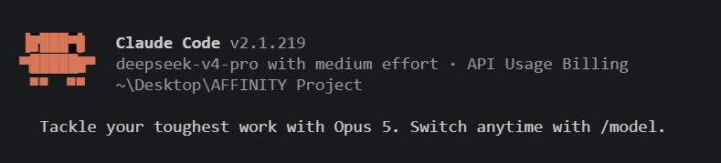

Part II | Affinity · Claude Code · DeepSeek | −C +M +Y
In part I, we chose Claude Code instead of Claude Desktop. Start VS Code, add the Claude Code extension and keep all your notes, MD, scripts and result images in your folder. Much better workflow. *
This part II guide shows how to point Claude Code to the DeepSeek model.
Why: (Potentially) cheaper. DeepSeek charges per token instead of a monthly subscription, so you can set a token ceiling (e.g., $10) and only pay for what you use—no need to maintain a Claude subscription just to run occasional Affinity scripts.
How: DeepSeek exposes an Anthropic-API-compatible endpoint, so you can redirect Claude Code to DeepSeek instead of Anthropic—same MCP connection to Affinity, same scripts, same folder workflow, only the model backend and billing change.
Checklist
.mcp.json already talking to Affinity.mcp.json the Affinity connection stays exactly as in part IThe key idea
By pointing Claude Code at a different Anthropic-API-compatible backend, Claude Code gets its answers from — in this case — DeepSeek. Those answers then get sent into Affinity's server via the MCP client, the same way we did with Sonnet / Opus.
In a new terminal
Open a new terminal. Before typing claude, set these environment
variables — the eight below, taken from DeepSeek's
own Claude Code integration guide. Read in the guide also how to install Claude Code in your
terminal if not already done (npm install -g @anthropic-ai/claude-code).
| Variable | Value |
|---|---|
ANTHROPIC_BASE_URL | https://api.deepseek.com/anthropic |
ANTHROPIC_AUTH_TOKEN | your DeepSeek API key |
ANTHROPIC_MODEL | deepseek-v4-flash |
ANTHROPIC_DEFAULT_OPUS_MODEL | deepseek-v4-pro |
ANTHROPIC_DEFAULT_SONNET_MODEL | deepseek-v4-pro |
ANTHROPIC_DEFAULT_HAIKU_MODEL | deepseek-v4-flash |
CLAUDE_CODE_SUBAGENT_MODEL | deepseek-v4-flash |
CLAUDE_CODE_EFFORT_LEVEL | max |
PowerShell — in the test terminal only
> $env:ANTHROPIC_BASE_URL = "https://api.deepseek.com/anthropic" > $env:ANTHROPIC_AUTH_TOKEN = "<your DeepSeek key>" > $env:ANTHROPIC_MODEL = "deepseek-v4-flash" > $env:ANTHROPIC_DEFAULT_OPUS_MODEL = "deepseek-v4-pro" > $env:ANTHROPIC_DEFAULT_SONNET_MODEL = "deepseek-v4-pro" > $env:ANTHROPIC_DEFAULT_HAIKU_MODEL = "deepseek-v4-flash" > $env:CLAUDE_CODE_SUBAGENT_MODEL = "deepseek-v4-flash" > $env:CLAUDE_CODE_EFFORT_LEVEL = "max" > claude
Now launch Claude. You will get the Claude CLI, but in the background, DeepSeek is giving the answers.

These variables redirect all Claude Code traffic — billing included — away from Anthropic to DeepSeek. Set them only in a fresh terminal you open for this test, not in a session you're already using with your normal Claude subscription.
The variables are just Claude Code's environment, so you can set the same ones in Claude Code's
settings.json (the env block) and the VS Code extension will use DeepSeek
too — no terminal needed. We use a terminal here because it's temporary and touches nothing
permanent: close the window and you're back to normal. If you'd rather make DeepSeek a lasting
default in the extension, put the variables in a project .claude/settings.json — but
keep ANTHROPIC_AUTH_TOKEN in the gitignored settings.local.json, never a
committed file, or you'll leak your API key.
Verify
With Affinity running and the project folder open, type /mcp — you should still see the affinity server connected with the same tool list as always. That confirms the swap only touched which model is answering, not the tool connection itself. From here you talk to it exactly as you would to Claude.
Type /model to check there are DeepSeek models and no Claude models.
v4-flash was the standout: roughly a third the cost of v4-pro per
output token, and it made fewer mistakes in our tests, not more — the better default for
this class of work.
Part I chose Claude Code in VS Code (or the CLI in your terminal) over Claude Desktop. This means Claude Code reads and saves automatically from your project folder—your plans, notes, markdown files, and scripts all live in one place. You can archive everything to GitHub and keep result images in the folder alongside your work.
In this guide, we take the same workflow and swap the model backend: instead of Claude Opus or Sonnet, we point Claude Code at DeepSeek's compatible API. Everything else stays the same—same folder, same MCP connection to Affinity, same scripts, just cheaper inference.